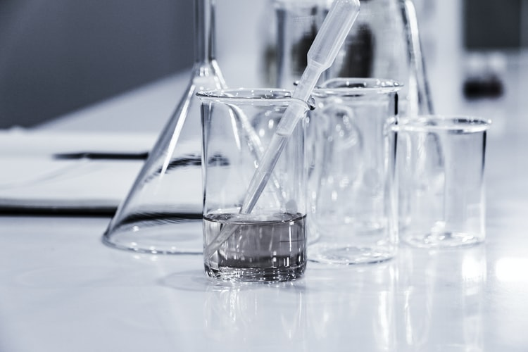

Laboratory Services
The department of Laboratory services at CARE AND CURE HOSPITALS
offers quality services with minimum turn around time.The laboratory
services are designed to meet the needs of patients and medical
professionals looking for test results, appropriate interpretation and
advisory services.
All the Laboratory specialities
are well equipped with State of the Art equipments, fully automated
and some of the specialities are integrated. All the analysers are
bidirectionally interfaced with Laboratory Information system (LIS) to
eliminate the manual programming errors.
The
department comprises of
- Histopathology
- Clinical pathology
- Microbiology
- Serology
- Biochemistry
- Blood storage center
Our vision is to provide precise reports as early as possible.
Many a times a false sense of economy is
sought to be achieved by curtailing the space requirements of the
laboratory by shifting it in an insignificant corner of the hospital.
For patients sent to the laboratory, provision
for waiting rooms and toilet facilities has also to be catered for.
Staff requirements such as common room, changing rooms, and toilet
facilities will also be part of the laboratory.
All our Doctors and staffs undergo continual
training and follow laboratory safety protocols.
With the facilities available in our clinical laboratory, it
undertakes
- Blood
- Urine
- Feces
- Body fluid
- Cerebrospinal fluid (CSF)
- Peritoneal fluid (Ascitic fluid)
- Synovial fluid
- Sputum and sweat
- Biopsy materials
- Bone marrow
- Renal calculi for analysis
- reporting for effective diagnosis of diseases.
Care and cure hospital has the full time pathologists, microbiologists
and biochemists in the interpretation and reporting of the results
analyzed from the samples collected from the patients. We have well
trained healthcare staffs in the maintenance of the laboratory.
Care and cure Hospital laboratories follow strict norms in quality
control measures and are participants in the internal and external
quality assurance programmes.
With our laboratory
services in care and cure hospital delivers the precise and accurate
reporting in diagnostics, cancer, cardiovascular disease and
infectious disease testing, including viral diseases like Chikungunya,
Swine Flu and Dengue.
 CARE AND CURE HOSPITAL
CARE AND CURE HOSPITAL